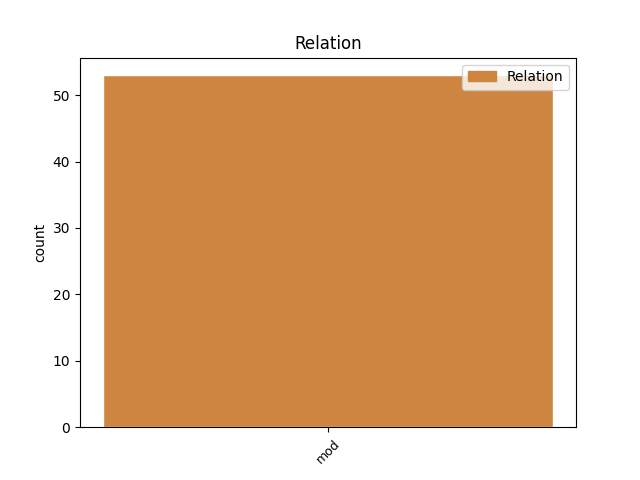
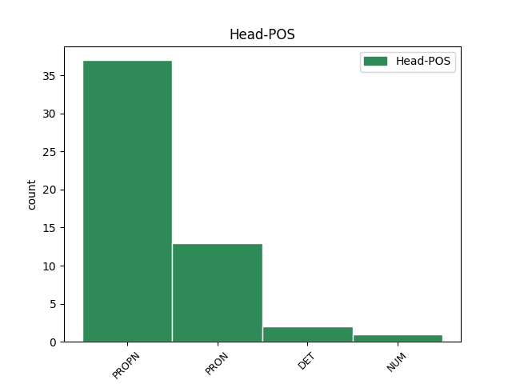
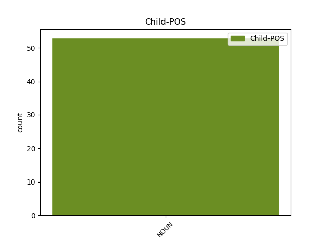

Distribution of features within this leaf



Agreement Rules sorted by frequency.
- When the dependent token is the modifer(mod) of the head token, and the head token is PROPN and the dependent token is NOUN.
1 Wszelkie _ _ _ _ 0 _ _ _
2 nadzieje _ _ _ _ 0 _ _ _
3 o _ _ _ _ 0 _ _ _
4 Europie Europa PROPN subst:sg:loc:f Case=Loc|Gender=Fem|Number=Sing 0 _ _ _
5 socjalnej socjalna NOUN subst:sg:loc:f Case=Loc|Gender=Fem|Number=Sing 4 mod _ _
6 rozwiały _ _ _ _ 0 _ _ _
7 się _ _ _ _ 0 _ _ _
8 , _ _ _ _ 0 _ _ _
9 kiedy _ _ _ _ 0 _ _ _
10 Europejski _ _ _ _ 0 _ _ _
11 Trybunał _ _ _ _ 0 _ _ _
12 Sprawiedliwości _ _ _ _ 0 _ _ _
13 wydał _ _ _ _ 0 _ _ _
14 orzeczenia _ _ _ _ 0 _ _ _
15 w _ _ _ _ 0 _ _ _
16 sprawach _ _ _ _ 0 _ _ _
17 Vaxholm _ _ _ _ 0 _ _ _
18 i _ _ _ _ 0 _ _ _
19 Viking _ _ _ _ 0 _ _ _
20 Line _ _ _ _ 0 _ _ _
21 . _ _ _ _ 0 _ _ _
1 Wciąż _ _ _ _ 0 _ _ _
2 to to PRON subst:sg:nom:n:ncol Case=Nom|Gender=Neut|Number=Sing|PronType=Dem 0 _ _ _
3 samo _ _ _ _ 0 _ _ _
4 , _ _ _ _ 0 _ _ _
5 morderstwa morderstwo NOUN subst:pl:nom:n:ncol Case=Nom|Gender=Neut|Number=Plur 2 mod _ _
6 i _ _ _ _ 0 _ _ _
7 chaos _ _ _ _ 0 _ _ _
8 . _ _ _ _ 0 _ _ _
1 LICZBA _ _ _ _ 0 _ _ _
2 mieszkańców _ _ _ _ 0 _ _ _
3 Ziemi _ _ _ _ 0 _ _ _
4 , _ _ _ _ 0 _ _ _
5 których _ _ _ _ 0 _ _ _
6 dochód _ _ _ _ 0 _ _ _
7 nie _ _ _ _ 0 _ _ _
8 przekracza _ _ _ _ 0 _ _ _
9 1 _ _ _ _ 0 _ _ _
10 dolara _ _ _ _ 0 _ _ _
11 dziennie _ _ _ _ 0 _ _ _
12 : _ _ _ _ 0 _ _ _
13 1199000000 1199000000 NUM num:pl:nom:m3:rec Animacy=Inan|Case=Nom|Gender=Masc|Number=Plur|NumForm=Digit|NumType=Card 0 _ _ _
14 ( _ _ _ _ 0 _ _ _
15 słownie _ _ _ _ 0 _ _ _
16 : _ _ _ _ 0 _ _ _
17 miliard _ _ _ _ 0 _ _ _
18 sto _ _ _ _ 0 _ _ _
19 dziewięćdziesiąt _ _ _ _ 0 _ _ _
20 milionów milion NOUN subst:pl:gen:m3 Animacy=Inan|Case=Gen|Gender=Masc|Number=Plur 13 mod _ SpaceAfter=No
21 ) _ _ _ _ 0 _ _ _
22 . _ _ _ _ 0 _ _ _
1 Nawet _ _ _ _ 0 _ _ _
2 przy _ _ _ _ 0 _ _ _
3 najniższych _ _ _ _ 0 _ _ _
4 stawkach _ _ _ _ 0 _ _ _
5 polscy _ _ _ _ 0 _ _ _
6 lekarze _ _ _ _ 0 _ _ _
7 z _ _ _ _ 0 _ _ _
8 Białorusi _ _ _ _ 0 _ _ _
9 mogli _ _ _ _ 0 _ _ _
10 by _ _ _ _ 0 _ _ _
11 zarobić _ _ _ _ 0 _ _ _
12 miesięcznie _ _ _ _ 0 _ _ _
13 trzy _ _ _ _ 0 _ _ _
14 razy raz NOUN subst:pl:acc:m3 Animacy=Inan|Case=Acc|Gender=Masc|Number=Plur 15 mod _ _
15 więcej więcej DET num:pl:acc:m3:rec Animacy=Inan|Case=Acc|Gender=Masc|Number=Plur|NumType=Card|PronType=Ind 0 _ _ _
16 niż _ _ _ _ 0 _ _ _
17 po _ _ _ _ 0 _ _ _
18 wschodniej _ _ _ _ 0 _ _ _
19 stronie _ _ _ _ 0 _ _ _
20 granicy _ _ _ _ 0 _ _ _
21 . _ _ _ _ 0 _ _ _
Disagree Examples:
1 Teraz _ _ _ _ 0 _ _ _
2 wystarczy _ _ _ _ 0 _ _ _
3 na _ _ _ _ 0 _ _ _
4 dwa _ _ _ _ 0 _ _ _
5 razy raz NOUN subst:pl:acc:m3 Animacy=Inan|Case=Acc|Gender=Masc|Number=Plur 6 mod _ _
6 więcej więcej DET num:pl:acc:n:rec:ncol Case=Acc|Gender=Neut|Number=Plur|NumType=Card|PronType=Ind 0 _ _ _
7 . _ _ _ _ 0 _ _ _
1 W _ _ _ _ 0 _ _ _
2 imię _ _ _ _ 0 _ _ _
3 nie _ _ _ _ 0 _ _ _
4 wiem _ _ _ _ 0 _ _ _
5 czego co PRON subst:sg:gen:n:ncol Case=Gen|Gender=Neut|Number=Sing|PronType=Int 0 _ _ _
6 , _ _ _ _ 0 _ _ _
7 " _ _ _ _ 0 _ _ _
8 prezydentury prezydentura NOUN subst:sg:gen:f Case=Gen|Gender=Fem|Number=Sing 5 mod _ _
9 wszystkich _ _ _ _ 0 _ _ _
10 Polaków _ _ _ _ 0 _ _ _
11 " _ _ _ _ 0 _ _ _
12 , _ _ _ _ 0 _ _ _
13 " _ _ _ _ 0 _ _ _
14 pełnej _ _ _ _ 0 _ _ _
15 integracji _ _ _ _ 0 _ _ _
16 obozu _ _ _ _ 0 _ _ _
17 solidarnościowego _ _ _ _ 0 _ _ _
18 " _ _ _ _ 0 _ _ _
19 ( _ _ _ _ 0 _ _ _
20 teoretycznie _ _ _ _ 0 _ _ _
21 UW _ _ _ _ 0 _ _ _
22 może _ _ _ _ 0 _ _ _
23 , _ _ _ _ 0 _ _ _
24 jak _ _ _ _ 0 _ _ _
25 najbardziej _ _ _ _ 0 _ _ _
26 , _ _ _ _ 0 _ _ _
27 wstąpić _ _ _ _ 0 _ _ _
28 do _ _ _ _ 0 _ _ _
29 AWS _ _ _ _ 0 _ _ _
30 ) _ _ _ _ 0 _ _ _
31 , _ _ _ _ 0 _ _ _
32 czy _ _ _ _ 0 _ _ _
33 czegoś _ _ _ _ 0 _ _ _
34 tam _ _ _ _ 0 _ _ _
35 jeszcze _ _ _ _ 0 _ _ _
36 , _ _ _ _ 0 _ _ _
37 zdąża _ _ _ _ 0 _ _ _
38 się _ _ _ _ 0 _ _ _
39 w _ _ _ _ 0 _ _ _
40 przeciwnym _ _ _ _ 0 _ _ _
41 kierunku _ _ _ _ 0 _ _ _
42 . _ _ _ _ 0 _ _ _
1 Wieś _ _ _ _ 0 _ _ _
2 u _ _ _ _ 0 _ _ _
3 podnóża _ _ _ _ 0 _ _ _
4 wzgórz _ _ _ _ 0 _ _ _
5 - _ _ _ _ 0 _ _ _
6 tzw _ _ _ _ 0 _ _ _
7 . _ _ _ _ 0 _ _ _
8 Góry Góra PROPN subst:sg:gen:f Case=Gen|Gender=Fem|Number=Sing 0 _ _ _
9 Grójeckiej _ _ _ _ 0 _ _ _
10 i _ _ _ _ 0 _ _ _
11 Góry _ _ _ _ 0 _ _ _
12 Lubszeckiej _ _ _ _ 0 _ _ _
13 ( _ _ _ _ 0 _ _ _
14 366 _ _ _ _ 0 _ _ _
15 m _ _ _ _ 0 _ _ _
16 n.p.m _ _ _ _ 0 _ _ _
17 . _ _ _ _ 0 _ _ _
18 ) _ _ _ _ 0 _ _ _
19 , _ _ _ _ 0 _ _ _
20 najwyższych _ _ _ _ 0 _ _ _
21 wzniesień wzniesienie NOUN subst:pl:gen:n:ncol Case=Gen|Gender=Neut|Number=Plur 8 mod _ _
22 na _ _ _ _ 0 _ _ _
23 ziemi _ _ _ _ 0 _ _ _
24 lublinieckiej _ _ _ _ 0 _ _ _
25 . _ _ _ _ 0 _ _ _
1 Klient _ _ _ _ 0 _ _ _
2 woli _ _ _ _ 0 _ _ _
3 dopłacić _ _ _ _ 0 _ _ _
4 i _ _ _ _ 0 _ _ _
5 wybrać _ _ _ _ 0 _ _ _
6 coś coś PRON subst:sg:acc:n:ncol Case=Acc|Gender=Neut|Number=Sing|PronType=Ind 0 _ _ _
7 dobrej _ _ _ _ 0 _ _ _
8 jakości jakość NOUN subst:sg:gen:f Case=Gen|Gender=Fem|Number=Sing 6 mod _ _
9 - _ _ _ _ 0 _ _ _
10 tłumaczy _ _ _ _ 0 _ _ _
11 Aiston _ _ _ _ 0 _ _ _
12 . _ _ _ _ 0 _ _ _
1 Wśród _ _ _ _ 0 _ _ _
2 osób _ _ _ _ 0 _ _ _
3 , _ _ _ _ 0 _ _ _
4 które _ _ _ _ 0 _ _ _
5 nielegalnie _ _ _ _ 0 _ _ _
6 przekroczyły _ _ _ _ 0 _ _ _
7 wschodnią _ _ _ _ 0 _ _ _
8 granicę _ _ _ _ 0 _ _ _
9 , _ _ _ _ 0 _ _ _
10 było _ _ _ _ 0 _ _ _
11 sześciu _ _ _ _ 0 _ _ _
12 obywateli _ _ _ _ 0 _ _ _
13 Bangladeszu _ _ _ _ 0 _ _ _
14 , _ _ _ _ 0 _ _ _
15 dwóch _ _ _ _ 0 _ _ _
16 Afgańczyków _ _ _ _ 0 _ _ _
17 i _ _ _ _ 0 _ _ _
18 czterech _ _ _ _ 0 _ _ _
19 Kurdów Kurd PROPN subst:pl:gen:m1 Animacy=Hum|Case=Gen|Gender=Masc|Number=Plur 0 _ _ _
20 irackich _ _ _ _ 0 _ _ _
21 , _ _ _ _ 0 _ _ _
22 w _ _ _ _ 0 _ _ _
23 tym _ _ _ _ 0 _ _ _
24 kobieta kobieta NOUN subst:sg:nom:f Case=Nom|Gender=Fem|Number=Sing 19 mod _ _
25 z _ _ _ _ 0 _ _ _
26 dzieckiem _ _ _ _ 0 _ _ _
27 . _ _ _ _ 0 _ _ _